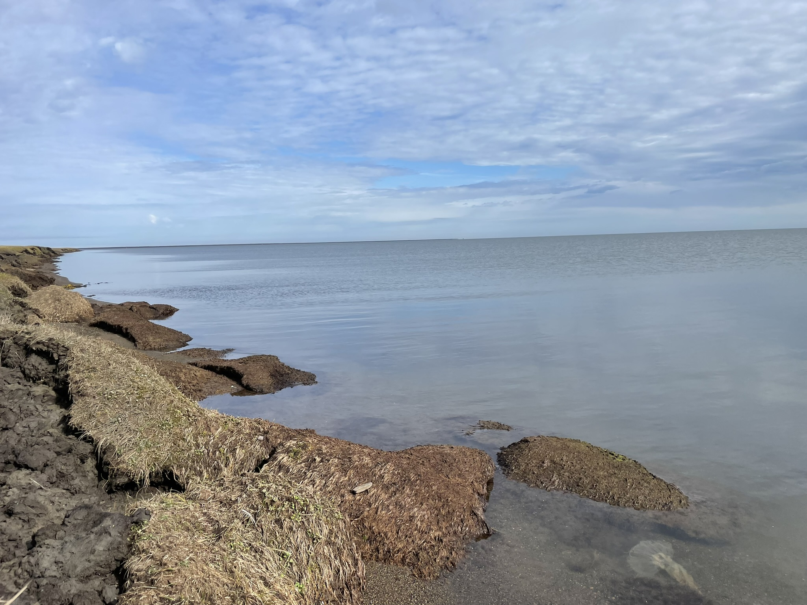

Changing climate patterns and surface hydrology are altering nearshore nutrient cycling, ice dynamics, and circulation. This work examines how wind-driven mixing and riverine influence regulate biogeochemical gradients, air–water gas exchange, and ice–ocean interactions across coastal environments.
About
I am a coastal biogeochemical and hydrology researcher studying the impacts of climate change on rapidly changing coastal environments. My research focuses on Arctic aquatic ecosystems and coastlines, where thermal and hydrologic change are reshaping hydrologic connectivity, biogeochemical cycling, and ecosystem resilience.
I enjoy working at the intersection of ecology and physical sciences in order to improve mechanistic understanding of coastal change. My work combines field measurements, geospatial analysis, remote sensing, and environmental sensing datasets to examine how ecological processes, nutrient fluxes, and physical forces interact to drive ecosystem response.
In my current appointment at WHOI in the Applied Ocean Physics and Engineering department with Julia Guimond , I am studying hydrothermal impacts and ecological consequences of coastal inundation and saltwater intrusion on permafrost associated coastlines. I earned my Ph.D. from the University of Texas at El Paso where I worked as part of the Beaufort Lagoons Ecosystems LTER studying coastal aquatic carbon cycling in Arctic ponds, rivers, and lagoons. In addition to Arctic work, I am excited to have the opportunity to go back to my personal and academic roots supporting saltmarsh hydrology and biogeochemistry projects with the Guimond group.

Eroding coastal bluffs along Elson Lagoon near Utqiagvik, AK.
Research

Satellite image of sediment laden ice distribution in Elson Lagoon. Photo: Sentinel-2
Ice-ocean Interactions in Nearshore Arctic

Julia Guimond and myself deploying water level loggers in coastal groundwater wells near Prudhoe Bay, AK. Photo: Nathaniel Wilder
Coastal Inundation & Tundra Hydrology
Coastal inundation is becoming more prevalent across Alaskan coastlines, with poorly understood hydrothermal and ecological consequences. This research investigates how salinization reshapes subsurface thermal regimes, hydrologic connectivity, and ecosystem vulnerability along Arctic coastlines.

Students sampling surface water in a tundra pond near Utqiagvik, AK.
Biogeochemical Impacts of Thermal Alteration
Accelerating permafrost thaw is mobilizing biogeochemical constituents and disrupting surface-subsurface connectivity on the Arctic coastal plain. I study how shifts in surface–subsurface connectivity influence carbon cycling, ecosystem metabolism, and biogeochemical fluxes in small aquatic systems undergoing environmental change.
Selected Publications
Full list of publications available on Google Scholar and ResearchGate.
Spera, A.C., Peterson, S., Tweedie, C., Lougheed, V., 2026.
Wind-driven Circulation Impacts Water Quality and pCO2 Over an Estuarine Gradient in an Arctic Lagoon.
Estuaries and Coasts.
View publication
Spera, A.C., McClelland, J.W., Demir, C., Cardenas, M.B., Guimond, J.A., 2025.
Saltwater inundation’s concurrent effects on below-ground thermal hydrology and above-ground properties of Arctic coastal tundra.
Science of The Total Environment.
View publication
Spera, A.C., Lougheed, V.L., 2025.
CO2 Emissions From Low Order Tundra Streams Stimulated by Surface‐Subsurface Connectivity Following Extreme Rainfall Events.
JGR Biogeosciences.
View publication
Contact
Email: alina.spera@whoi.edu